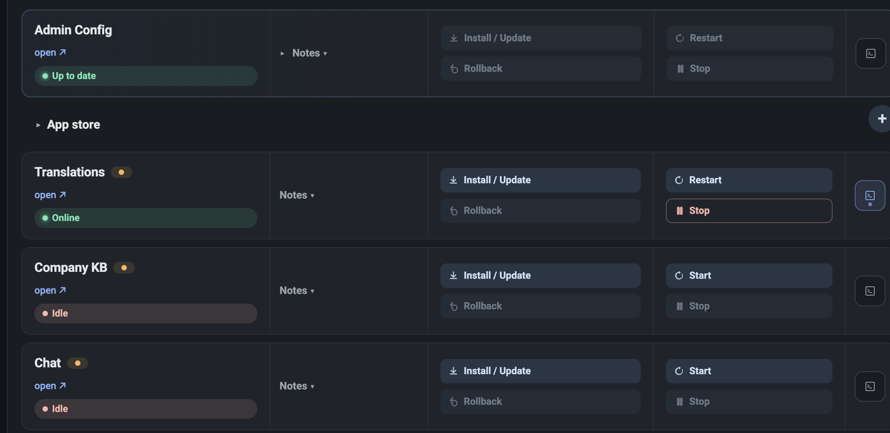
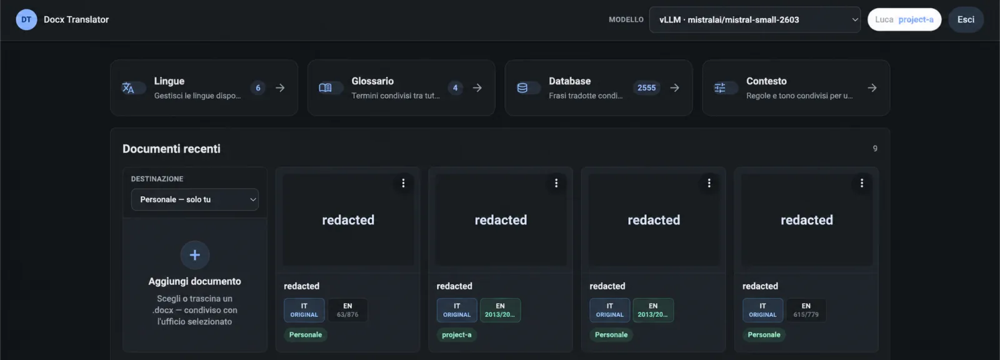

ManufacturingServices

Documents03
DOCX translation
Translating big docx manuals is a tedious, expensive and error prone process. Translators often copy paste paragraphs to chatgpt and re-paste them back. This app does the copy pasting for you while maintaining the docx structure (tables, paragraphs…), 3000 times a document, for just a few euros per document online or locally if you want more privacy and you don’t mind a bigger upfront cost. You can have your company glossary and check the results with error detection systems.
Note: numbers are based on real 100 page documents tested manually
Learn more DOCX
DOCX
04
Local AI
Keep your data private by using an AI that is self hosted INSIDE of your company network.
Note: this is expensive and definitely not for everyone. It can be done after a quick study to decide if it's worth it for the privacy improvements.
Learn more Local AI
Local AI
05
Rockwell PLC
Saving time and errors in data entry by transforming any custom excel file exported from your electrical schemas into perfect plc code to easily import into the app
Learn more Rockwell PLC
Rockwell PLC
06
Automatic workflows
Custom built webapp for repetitive interactions with the company knowledge base. What this means is going from the question to the paragraph of the best fitting document in a few seconds. With preview.
There is also wide support for excel file modification and analysis. And work in progress eplan parsing and search.
Learn more Workflows
Excel
Workflows
Excel